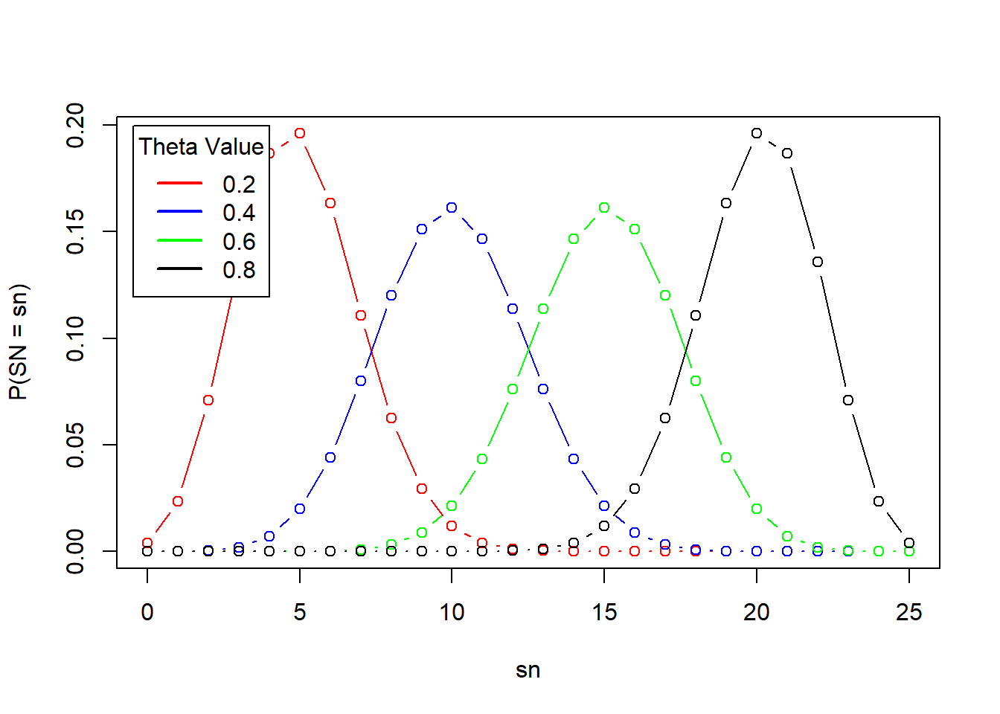
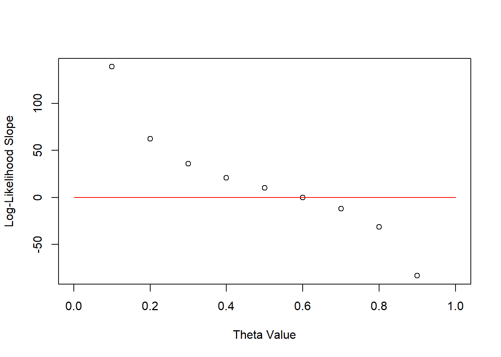
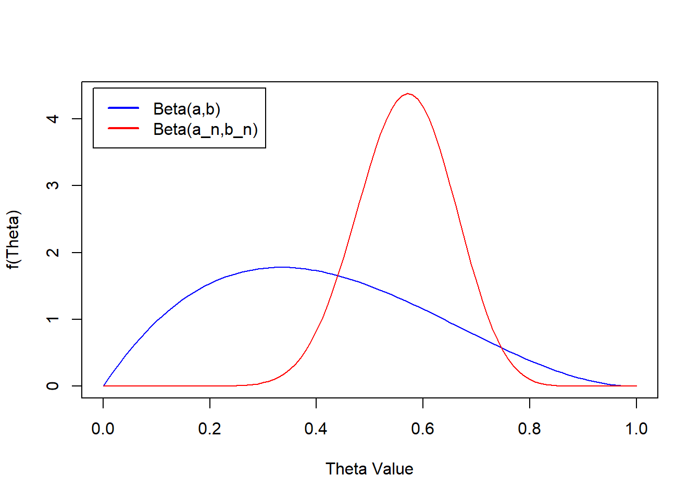

3 Introduction
3.1 Binomial Model
Here I will explore the binomial model, where each random variable represents a success (1) or failure (0) of a trial. The usual example is coin tossing, which, unless an unfair coin is used, always has a probability of 0.5 for landing a head or tail. It is therefore more interesting to explore a problem such as the thumbtack toss, where the ground truth probability of success (landing with the point up) is less well defined.
We can assume n trials are done and count the total number of trials where the point lands up (\(s_n\) ) to find an approximation of the ground truth for the probability of success \(\theta\) . A feasible approach to estimating \(\theta\) would be to divide the number of success \(s_n\) by the number of trials \(n\):
\[ \theta = \frac{s_n}{n} \]
However, this estimation is only meaningful for large n and provides no estimate of the uncertainty of the measurement. Hence, the field of statistical inference becomes relevant as the latter can be achieved by creating a model for the problem.
3.1.0.1 Generate Data
To create the model, we first generate data by tossing the thumbtack say, 25 times (\(n = 25\)). We can then present the problem as a binomial model where:
\[ s_n \sim Bin(n,\theta) \]
which takes the form:
\[ f(s_n;n,\theta) = \binom{n}{s_n}\theta^{s_n}(1-\theta)^{n-s_n} \]
The above plot shows how the choice of \(\theta\) affects the overall distribution. From here, we can try to infer the true value of theta using a frequentist or Bayesian approach.
3.1.1 Maximum Likelihood
The frequentist approach relies on what is called the likelihood: the probability that the distribution has a certain parameter given the data we collected. From this equation we try to find the maximum likelihood. That is, we try to find the parameter that maximizes the likelihood for the data we collected. For our binomial model, we then have:
\[ \hat{\theta}(s_n) = \underset{\theta}{argmax}L(\theta;s_n) \]
where
\[ L(\theta;s_n) \]
is the likelihood function we are maximizing.
For convenience, the likelihood is often expressed as a log-likelihood which is usually easier to compute. The first step is to ignore the normalizing constant, as it does not depend on \(\theta\) . We then have:
\[ l(\theta;s_n) = logL(\theta;s_n) \]
\[ = logf(s_n;n,\theta) \propto log(\theta^{s_n}(1-\theta)^{n-s_n}) \]
\[ = s_nlog\theta + (n-s_n)log(1-\theta) \]
Differentiating the equation helps us identify the extreme values:
\[ l'(\theta;s_n) = \frac{s_n}{\theta} - \frac{n-s_n}{1-\theta} = 0 \]
\[ = s_n-s_n\theta - n\theta + s_n\theta = s_n -n\theta \]
\[ \theta = \frac{s_n}{n} \]

We can also use the second derivative which is always negative, indicating that the log-likelihood is concave and that the extreme value is a global maximum.
Although this approach gives us an estimate of the model parameters, there is no indication of our confidence in the result and on the likelihood of other parameter values. This is due to the frequentist approach treating \(\theta\) as a constant as opposed to an unknown random variable.
This is circumvented by calculating the maximum likelihood estimates from all observable data sets. In this case, we are observing the random variable \(S_n\) as opposed to the constant \(s_n\) and have the following *maximum likelihood estimate:
\[ \hat{\theta}(Y) = \frac{Y}{n}\]
We can then estimate the standard error and construct confidence intervals for our parameter values. Hypothesis testing is also a possibility.
Note: fill out an example showing how to get the above.
3.1.2 Bayesian Model
In the Bayesian framework, we treat the distribution parameters as random variables. We are first interested in knowing what the probability of the thumbtack landing upwards is prior to tossing any. This prior essentially defines the distribution from which our parameter \(\theta\) is sampled from. For example, we can set this to be a beta distribution:
\[ \theta \sim Beta(\alpha,\beta) \]
We can also formulate the sampling distribution which is the distribution of the data given the parameter. It is denoted as follows:
\[ f_{S_n|\Theta}(s_n | \theta) \] This notation emphasizes that the sampling distribution is a conditional probability distribution. We therefore have a model composed of the following prior and sampling distributions: \[ S_n|\theta \sim Bin(n,\theta) \]
\[ \theta \sim Beta(\alpha,\beta) \] With this tools, we can now focus on updating our parameter estimates based on observed data. This step is what has us compute the so-called posterior distribution of the parameter. We start with:
\[ f_{\theta,\S_n}(\theta,s_n) = f_{\theta|S_n}(\theta|s_n)f_{S_n}(s_n) \] \[ f_{\theta|S_n}(\theta|s_n) = f_{\theta,\S_n}(\theta,s_n)/f_{S_n}(s_n) \] \[ f_{\theta|S_n}(\theta|s_n) = \frac{f_{\theta}(\theta)f_{\S_n|\theta}(s_n|\theta)}{f_{S_n}(s_n)} \] As the denominator on the RHS has no dependence on \(\theta\), it can be ignored and the posterior can be seen as proportional to the joint distribution (the numerator):
\[ f_{\theta|S_n}(\theta|s_n) \propto f_{\theta}(\theta)f_{\S_n|\theta}(s_n|\theta) = \frac{\Gamma(\alpha + \beta)}{\Gamma(\alpha)\Gamma(\beta)}\theta^{\alpha - 1}(1-\theta)^{\beta - 1} * \binom{n}{s_n}\theta^{s_n}(1-\theta)^{n-s_n} \] \[ \propto \theta^{s_n + \alpha_0 - 1}(1-\theta)^{n-s_n + \beta_0 - 1} \]
This derivation is similar in form to the beta distribution given the following, new representation of the posterior:
\[ \Theta|S_n \sim Beta(s_n + \alpha_0, n - s_n + \beta_0) \] We can now compare the prior and posterior:
n <- 25
sn <- 15
a <- 2
b <- 3
a_n <- a + sn
b_n <- n - sn + b
thetas <- seq(0,1,0.01)
prior <- dbeta(thetas,a,b)
posterior <- dbeta(thetas,a_n,b_n)
plot(thetas,prior, xlab = 'Theta Value',ylab = 'f(Theta)',
col = 'blue',ylim = c(0,max(posterior)),
type = 'l')
lines(thetas,posterior, col = 'red')
legend('topleft',inset = 0.02,legend = c('Beta(a,b)','Beta(a_n,b_n)'),
col = c('blue','red'),
lwd = 2)
This reveals that the true value of theta (given the observed trials) is most likely between ~ 0.4 and 0.8.
pbeta(0.8,a_n,b_n) - pbeta(0.4,a_n,b_n) [1] 0.9649619We can also calculate the posterior mean by finding the mean of the beta distribution we derived for the posterior
\[ E(\theta|S_n = s_n) = \frac{\alpha_n}{\alpha_n + \beta_n} = \frac{s_n + \alpha_0}{\alpha_0 + n + \beta_0} = \frac{17}{30} \]
3.1.3 Components of Bayesian Inference
We can now generalize the example to highlight the key concepts for Bayesian inference.
We work on a problem with observed data coming from n observations which we can then use to create and update a model representing the generative process behind the data. Here, we will focus on parametric inference, where the observed data helps us better estimate the model parameters.
3.1.3.1 Sampling Distribution and the Likelihood function
The conditional distribution of the data given the parameter values, \[f_{S_n|\Theta}(s_n|\theta)\] , can be referred to as the sampling distribution or the likelihood function. The be exact, the sampling distribution presents the above as a function of the observed data, whereas the likelihood presents it as a function of the model parameters.
If we assume that our data is independent, given \[\theta\], we can present the joint sampling distribution as a product of the sampling distributions for each random variable or trial:
\[ f_{S_N|\Theta}(s|\theta) = \prod_{i =1}^{N}f_{S_i|\Theta}(s_i|\theta) \]
Which becomes even simpler if the observations ar i.i.d (not only independent, but coming from the same distribution):
\[ f_{S_N|\Theta}(s|\theta) = \prod_{i =1}^{N}f(s_i|\theta) \]
Many different models can be used for the sampling distribution, but it is usually recommended to use models whose behavior best describes the observed phenomena (e.g. our thumbtack example is a clear success or failure scenario, which makes the binomial distribution suitable).
3.1.3.2 Prior distribution
The prior distribution represents the distribution from which the parameter values of the sampling distribution are generated. It represents our beliefs in the parameter values prior to observing any data.
In situations where there is little confidence in the possible values for the parameter, it is best to just a vague prior distribution to reduce its influence on the model and put a greater emphasis on the observed data (uninformative prior). We could also have an informative prior which has a greater influence on the model which can enforce sparsity on values we believe should be zero. We can also call the prior distribution a parametric distribution, which depends on hyperparameters (in the thumbtack case, these would be \(\alpha\) and \(\beta\) ).
Posterior distribution
For the posterior, we make use of Bayes’ theorem to formulate it. The normalizing constant, which has no dependence on the parameter can be treated as a constant w.r.t. the parameter values and is often ignored. We can therefore compute the posterior as being proportional to the joint distribution.
3.1.3.3 Marginal Likelihood
The normalizing constant is also described as the marginal likelihood, as it represents the joint probability of the observed data after marginalizing out the parameter $\theta$. This presents itself as an integral in continuous cases and as a sum in discrete cases (for the parameter). This can also be seen as the expectation of the sampling distribution, where we average the values over the full sample space for \(\theta\) .
3.1.4 Prediction
Beyond estimating the true parameter values, we are also interested in predicting the unobserved data (n + m). The simplest way to achieve this would be to use the MLE for the model parameters and predict the new data. This however, can lead to estimates that are biased if the observed data used for the MLE came from a small sample size (e.g.: only three tosses and all fell down). We can instead go the Bayesian route and compute a probability for the new observations given the observed data
\[ f_{\tilde{S}|S}(\tilde{s}|s) \]
The parameter values aren’t present in the function, but it is important to realize that they are need to derive the predictive distribution. In essence, the posterior predictive distribution is calculated as the product of the sampling distribution for the new data and the posterior distribution from the observed data, which acts as un updated prior distribution. In essence, the same way we updated \(\alpha\) and \(\beta\) for the observed data, we do it again by updating their updated values.
\[ f_{\tilde{S}|S_n}(\tilde{s}|s_n) = \int_{\Theta} f_{\tilde{S}|\Theta}(\tilde{s}|\theta)f_{\theta|S_n}(\theta|s_n) d\theta \]
\[ f_{\tilde{S}|S_n}(\tilde{s}|s_n) = \int_{\Theta}\binom{m}{\tilde{s}} \theta^{\tilde{s}}(1-\theta)^{m - \tilde{s}} \frac{1}{B(\alpha_n,\beta_n)} \theta^{\alpha_n - 1}(1-\theta)^{\beta_n - 1}d\theta \]
Removing constants and recognizing the new formulation of a beta function, as in the earlier example, allows us to define the new posterior predictive function given the updated prior:
\[ f_{\tilde{S}|S_n}(\tilde{s}|s_n) = \binom{m}{\tilde{s}}\frac{B(\tilde{s} + \alpha_n,m + \beta_n - \tilde{s})}{B(\alpha_n,\beta_n)} \]
Which represents the beta-binomial distribution. With this formulation we can therefore iteratively update our prior distribution as we collect more samples, leading to a progressively more accurate posterior predictive distribution.